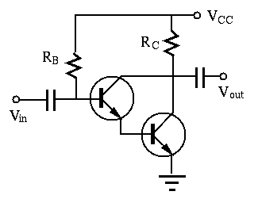

Find the output voltage in both (a) and (b) as a logic function of
the three input voltages  , and
, and  , each of which could be either
0V or 5V, as listed in the following tables. Assume the voltage drop across
a conducting diode is .
, each of which could be either
0V or 5V, as listed in the following tables. Assume the voltage drop across
a conducting diode is .

If we assume positive logic, i.e., high voltage is logical 1 (True) and low
voltage is logical 0 (False), then circuit (a) is a NOR (not OR) gate, and
circuit (b) is a NAND (not AND) gate:
The circuit below shows an NPN transistor circuit where  ,
,
,
,  ,
,  ,
,  ,
,
 , and
, and  . As always, we assume when
the transistor is conducting.
. As always, we assume when
the transistor is conducting.

Solution:
,
,
,
The circuit shown below is a simple Darlington transistor amplifier which is
composed of two transistors  and with their collectors connected
and the emitter of
and with their collectors connected
and the emitter of  connected to the base of . Assume
connected to the base of . Assume  and both transistors have .
and both transistors have .

Solution: